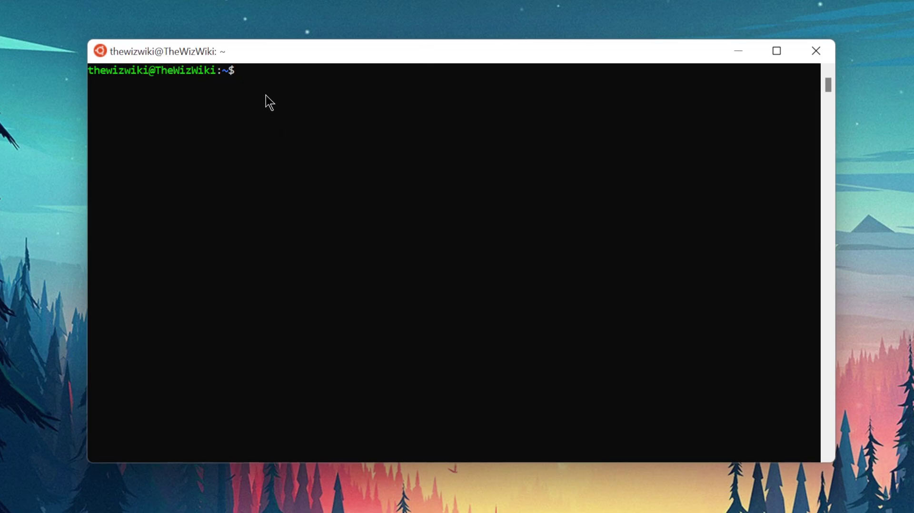

Dumps juegos
Podemos Dumpiar nuestros juegos de PS4 por Medio de FTP a nuestro PC para tener la copia de seguridad de nuestros juegos
Para esta Guia
Requisitos para este tutorial
- PC o Notebook con Windows 7, 8, 8.1, 10
- Para descomprimir archivos .rar o .zip
Programas para este Tutorial
| Archivos | Servidores | |
|---|---|---|
| Dumps Juegos | Mega | |
| WEB Oficial (ftpdump) | github.com | |
| WEB Oficial (PS4-Fake-PKG-Tools) | github.com | |
Para Empezar este Tutorial
- Descargamos los archivos
- Descomprimimos el archivo .rar o .zip
- ftpdump-main (Linux)
- Dump
- Con la última versión disponible
- Una vez descargado nuestro archivo
- Podemos abrir la APP Itemzflow Game Manager para Dumpiar nuestro juego
- Colocamos nuestro disco original y conectamos nuestro disco (USB) en exfat
- Abrimos Itemzflow Game Manager
- Buscamos el juego q vamos a copiar
- Una vez seleccionado le damos a Dummpear y seleccionamos que queremos copiar se recomienda el juego base
- Y esperamos que termine la barra de proceso
- Una vez terminado vamos al pc y abrimos PS4_Fake_PKG_Tools_3.87_V7 y abrimos orbis-pub-gen.exe
- Nos vamos
file/openy buscamos nuestro disco con el juego copiado y buscamos el archivo .gp4 - Después le damos a Build y en la ventana le damos a Modifiable package file… y seleccionamos donde queremos que se guarde y le damos al botón Build
- Y esperamos que termine
- Lo copiamos al USB y lo instalamos en nuestra consola
- Hay que eliminar el juego antes de instalar el PKG
- Y listo
- Lo extraemos y ejecutamos si descargamos ftpdump-main.rar
- Para esto necesitamos Linux para ejecutarlo como por ejemplo Ubuntu
- Para esto preparamos la consola con las siguientes configuraciones
- Activamos Enable BinLoader Server
- Activamos en nuestra consola un Payloads de FTP
- Para esto iniciamos el sistema de Ubuntu o sub sistema (Cualquier Pc Con Linux) 
- Buscamos la ruta donde tenemos nuestros archivos como ejemplo
- Dentro de la carpeta ejecutamos ftpdump más la ip de nuestra consola
- Si es dentro de Windows solo ejecutamos el ftpdump.bat
- Y esperamos que termine de dumpiar el juego
- Y solo nos quedaría crear los pkg para poder guardarlo o instalarlos
- Y listo
- Lo extraemos y ejecutamos si descargamos Dump
- Iniciamos el juego que nosotros queremos Dumpiar en nuestra consola
- Ahora vamos a iniciar un Payloads en nuestra consola GAME-Dumper para el Juego y Update-Dumper para la Actualizacion
- y seguimos los pasos de nuestro hot favorita y esperamos a que termine
- cuando termine nos mostrara una notificación
- si no hemos vista la notificación podemos revisar nuestro USB si todavía sigue titilando la Luz de progreso del USB
- una ves terminado vamos a nuestra PC para crear el PKG
- dentro de archivo descargado y descomprimido buscamos helper.exe
- seleccionamos la carpeta del juego y lo pasamos al programa helper.exe y lo soltamos encima
- con este proceso comprobamos que los trofeos están copiados bien
- si esta mal solo activamos el FTP en nuestra consola y buscamos la siguiente ruta
/user/trophy/conf/(El Id del juego)y buscamos el TROPHY.TRP y lo copiamos a nuestro PC - ahora lo copiamos a nuestra carpeta del juego recién dumpiado con el mismo nombre y extensión
- si todo esta bien continuamos y abrimos gengp4_app
- abrimos la carpeta del Juego y esperamos que termine
- después de terminado le damos a SAVE.GP4 con su nombre
- ahora abrimos orbis-pub-gen.exe y después buscamos el archivo -app.gp4
- después le damos a Build en la ventana siguiente le damos a Modifiable pachage file
- y le damos al Boton Buid y esperamos a que termine
- y listo nos creara un nuestra pkg para instalarlo en nuestra consola
- y listo
×